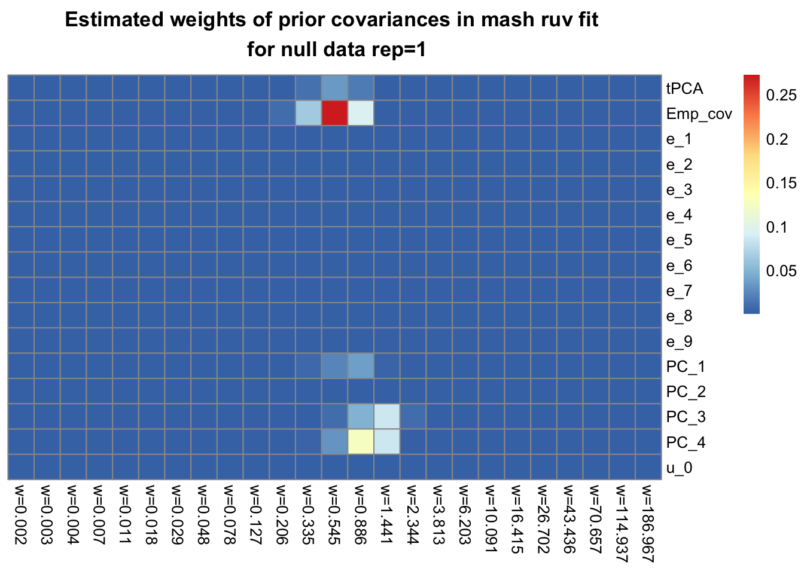
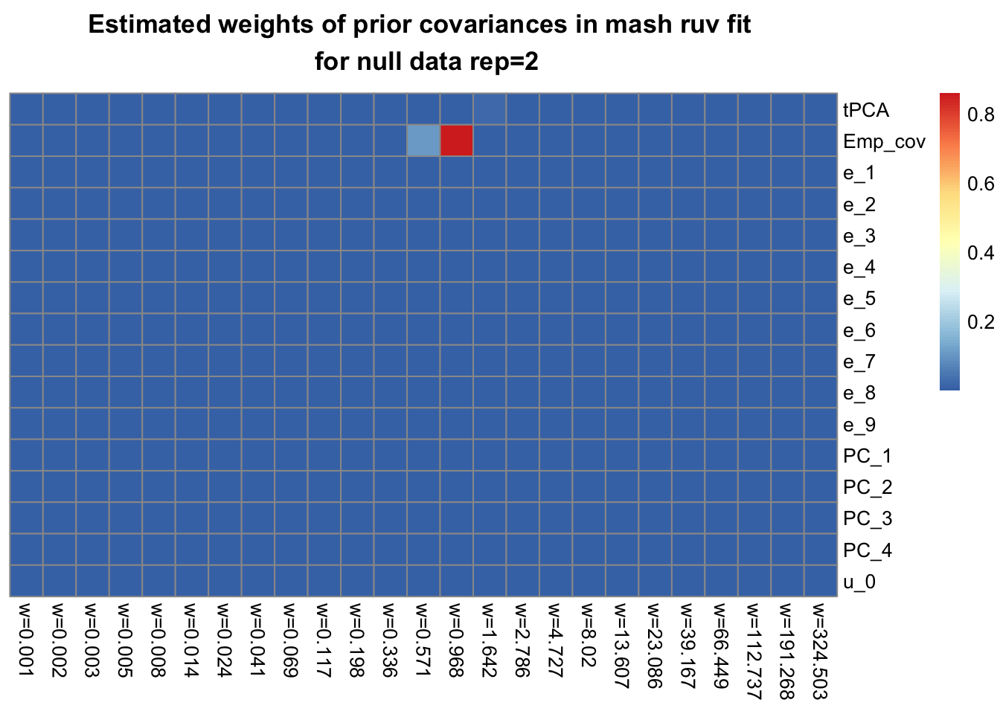
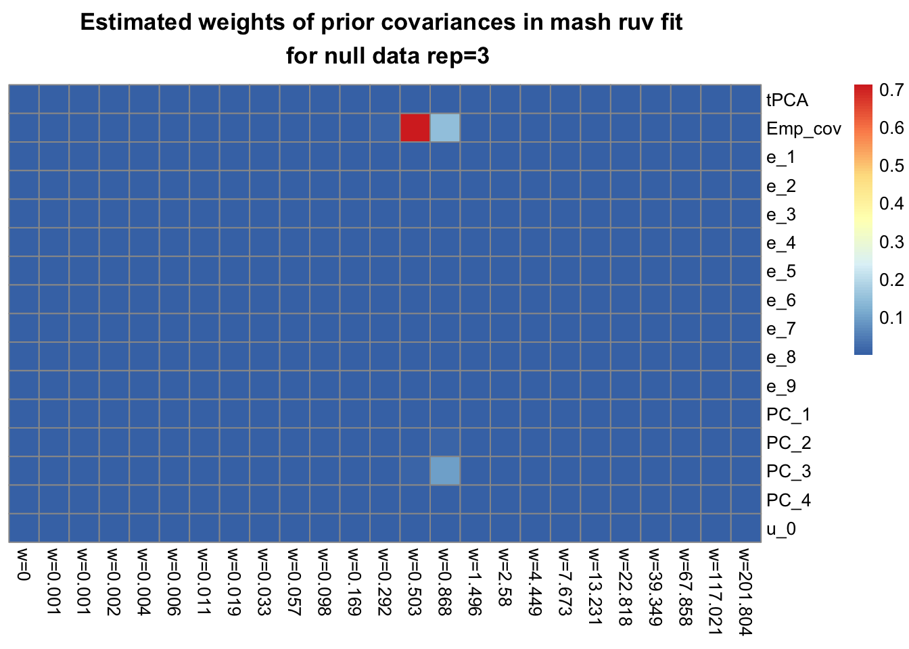
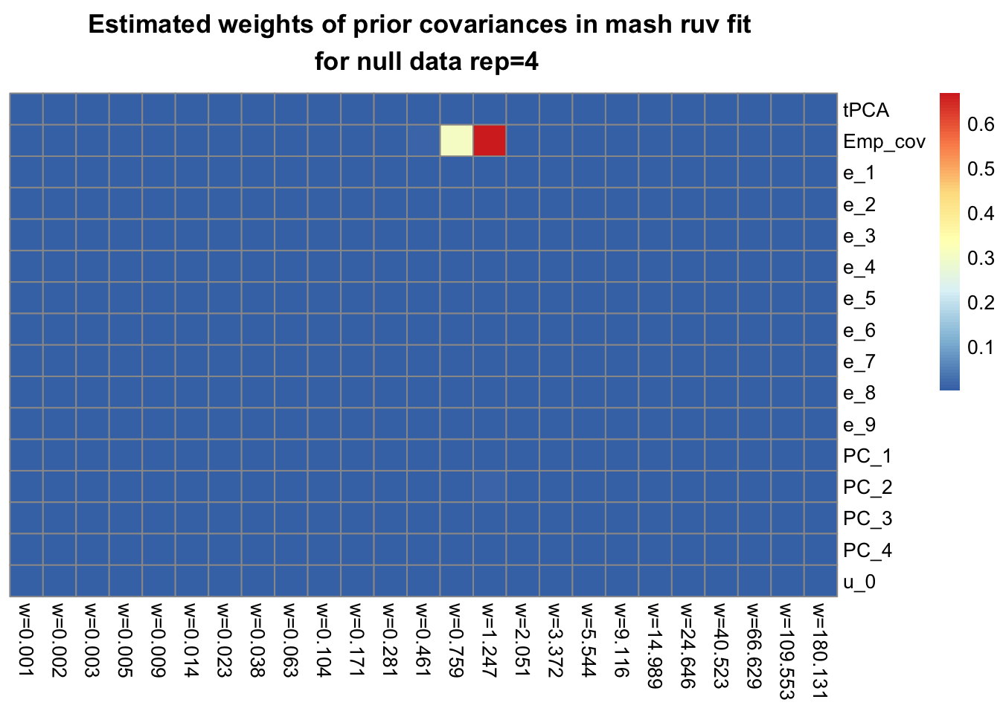
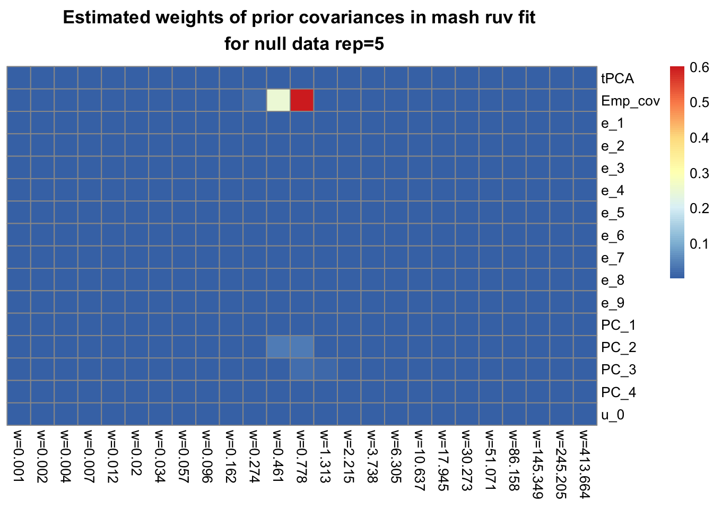

Testing differential expression on simulated bulk rna-seq data under the null (same permutation)
Yusha Liu
2021-2-2
Last updated: 2021-02-03
Checks: 7 0
Knit directory: tbdata_sim/
This reproducible R Markdown analysis was created with workflowr (version 1.6.2). The Checks tab describes the reproducibility checks that were applied when the results were created. The Past versions tab lists the development history.
Great! Since the R Markdown file has been committed to the Git repository, you know the exact version of the code that produced these results.
Great job! The global environment was empty. Objects defined in the global environment can affect the analysis in your R Markdown file in unknown ways. For reproduciblity it’s best to always run the code in an empty environment.
The command set.seed(20210202) was run prior to running the code in the R Markdown file. Setting a seed ensures that any results that rely on randomness, e.g. subsampling or permutations, are reproducible.
Great job! Recording the operating system, R version, and package versions is critical for reproducibility.
Nice! There were no cached chunks for this analysis, so you can be confident that you successfully produced the results during this run.
Great job! Using relative paths to the files within your workflowr project makes it easier to run your code on other machines.
Great! You are using Git for version control. Tracking code development and connecting the code version to the results is critical for reproducibility.
The results in this page were generated with repository version dd01471. See the Past versions tab to see a history of the changes made to the R Markdown and HTML files.
Note that you need to be careful to ensure that all relevant files for the analysis have been committed to Git prior to generating the results (you can use wflow_publish or wflow_git_commit). workflowr only checks the R Markdown file, but you know if there are other scripts or data files that it depends on. Below is the status of the Git repository when the results were generated:
Ignored files:
Ignored: .DS_Store
Ignored: .Rhistory
Ignored: output/.DS_Store
Untracked files:
Untracked: output/mouthwash_sim_null_summary.Rds
Untracked: output/mouthwash_sim_null_v2_summary.Rds
Untracked: output/null_output/
Untracked: output/null_v2_output/
Note that any generated files, e.g. HTML, png, CSS, etc., are not included in this status report because it is ok for generated content to have uncommitted changes.
These are the previous versions of the repository in which changes were made to the R Markdown (analysis/sim_null.Rmd) and HTML (docs/sim_null.html) files. If you’ve configured a remote Git repository (see ?wflow_git_remote), click on the hyperlinks in the table below to view the files as they were in that past version.
| File | Version | Author | Date | Message |
|---|---|---|---|---|
| Rmd | dd01471 | yushaliu | 2021-02-03 | Update some analyses |
| html | 3066607 | yushaliu | 2021-02-03 | Build site. |
| Rmd | f4cf8b8 | yushaliu | 2021-02-03 | Add the simulation results |
Simulation procedure
We apply various methods to detect differential exression on bulk rna-seq data simulated under the null. More specifically, we start with a subset of the tbdata which includes the gene expression data of 12,728 genes from 54 samples infected by 8 different types of bacteria and one non-infected control (6 individuals per condition), measured at 4 hours post-infection. Then we randomly permute the samples with respect to the condition labels so that there no longer exists association between gene expression levels and conditions.
There are two different ways to randomly permute the data: 1) the same permutation to all the genes, so the correlation among genes is preserved on the permuted dataset; 2) independent and different permutation to each gene. Here we simulate null data by applying the same permutation to all the genes; we simulate 10 replicate datasets in total.
Methods
We consider the following methods to compare gene expression levels under each infected condition to the control on the simulated null data. For methods related to mash, we always assume \(\alpha = 1\), i.e., the EZ model.
1. limma + mash with common baseline.
2. sva + limma + mash with common baseline.
3. mash + sample-specific random effects.
4. mash + sample-specific random effects + ruv, with variance inflation factor constrained to be at least 1.
5. poisson mash + sample-specific random effects + ruv.
Look at distributions of Z-scores by comparing to the mean
library(mashr)
library(edgeR)
library(limma)
### load in the design matrix
design <- readRDS("../simulations/design.Rds")
trts <- colnames(design)
R <- length(trts)
### plot the histograms of Z-scores across all genes and conditions
par(mfrow=c(2,2))
for(idx in 1:10){
### read in data
counts <- readRDS(paste0("../simulations/null_data/raw_data", idx, ".Rds"))
### normalize and transform the count data
y <- DGEList(counts)
y <- calcNormFactors(y)
dat_cpm <- cpm(y, log = TRUE)
### extract Bhat and Shat using limma
cov_of_interest = 1:ncol(design)
lmout = limma::lmFit(object = dat_cpm, design = design)
eout = limma::eBayes(lmout)
bhat = lmout$coefficients[,cov_of_interest,drop=FALSE]
shat = lmout$stdev.unscaled[,cov_of_interest,drop=FALSE] * sqrt(eout$s2.post)
rownames(shat) = rownames(bhat)
### compute Z-scores by comparing to the overall mean across all conditions
mash.data = mash_set_data(bhat, shat, alpha = 1)
mash.data.L = mash_update_data(mash.data, ref = "mean")
mash.Z = mash.data.L$Bhat/mash.data.L$Shat
### plot the histograms of Z-scores of all genes and conditions
hist(mash.Z, xlab="Z-scores", main=paste0("Hist of Z-scores \n by comparing to the mean \n across genes and conditions for rep=", idx))
}


Result summary
### limma + mash with common baseline
num_effects_1 <- rep(NA, 10)
for(i in 1:10){
mash.fit <- readRDS(paste0("output/null_output/mash_fit_rep_", i, ".Rds"))
idx.mash <- get_significant_results(mash.fit)
num_effects_1[i] <- length(idx.mash)
}
### number of false positives
num_effects_1 [1] 6 3958 5 1856 3073 952 6158 1285 2937 4744### false positive rates
round(num_effects_1/nrow(mash.fit$result$lfsr), 3) [1] 0.000 0.311 0.000 0.146 0.242 0.075 0.484 0.101 0.231 0.373### sva + limma + mash with common baseline
num_effects_2 <- rep(NA, 10)
for(i in 1:10){
mash.fit <- readRDS(paste0("output/null_output/sva_mash_fit_rep_", i, ".Rds"))
idx.mash <- get_significant_results(mash.fit)
num_effects_2[i] <- length(idx.mash)
}
### number of false positives
num_effects_2 [1] 7138 8527 7535 7924 6685 6515 6795 8047 7452 8521### false positive rates
round(num_effects_2/nrow(mash.fit$result$lfsr), 3) [1] 0.561 0.670 0.592 0.623 0.526 0.512 0.534 0.633 0.586 0.670### mash + sample-specific random effects
num_effects_3 <- rep(NA, 10)
for(i in 1:10){
mash.fit <- readRDS(paste0("output/null_output/mash_no_ruv_posterior_rep_", i, ".Rds"))
num_effects_3[i] <- sum(apply(mash.fit$lfsr, 1, min) < 0.05)
}
### number of false positives
num_effects_3 [1] 2 5175 126 1458 2288 621 4970 1724 3031 5041### false positive rates
round(num_effects_3/nrow(mash.fit$lfsr), 3) [1] 0.000 0.407 0.010 0.115 0.180 0.049 0.391 0.136 0.238 0.396### mash + sample-specific random effects + ruv
num_effects_4 <- rep(NA, 10)
for(i in 1:10){
mash.fit <- readRDS(paste0("output/null_output/mash_ruv_posterior_rep_", i, ".Rds"))
num_effects_4[i] <- sum(apply(mash.fit$lfsr, 1, min) < 0.05)
}
### number of false positives
num_effects_4 [1] 1461 5230 2976 4862 2667 3374 6815 5653 3293 4258### false positive rates
round(num_effects_4/nrow(mash.fit$lfsr), 3) [1] 0.115 0.411 0.234 0.382 0.210 0.265 0.536 0.444 0.259 0.335### poisson mash + sample-specific random effects + ruv
num_effects_5 <- rep(NA, 10)
for(i in 1:10){
pois.fit <- readRDS(paste0("output/null_output/pois_mash_ruv_posterior_rep_", i, ".Rds"))
num_effects_5[i] <- sum(apply(pois.fit$lfsr, 1, min) < 0.05)
}
### number of false positives
num_effects_5 [1] 9103 10105 10702 8318 9999 10532 10673 9190 6583 10953### false positive rates
round(num_effects_5/nrow(pois.fit$lfsr), 3) [1] 0.716 0.794 0.841 0.654 0.786 0.828 0.839 0.722 0.518 0.861Look at estimated weights of prior covariances in the mash ruv fit
library(pheatmap)
library(gridExtra)
## load in the mash ruv fit
for(i in 1:5){
res <- readRDS(paste0("../simulations/null_output/mash_ruv_fit_rep_", i, ".Rds"))
# calculate estimated weights
pi.mat <- matrix(res$pi, ncol=length(res$wlist), byrow=TRUE)
rownames(pi.mat) <- c(names(res$Ulist), names(res$ulist))
colnames(pi.mat) <- paste0("w=", round(res$wlist, 3))
# plot estimated weights
pheatmap(pi.mat, cluster_rows=FALSE, cluster_cols=FALSE, fontsize_row=10, fontsize_col=10,
main=paste0("Estimated weights of prior covariances in mash ruv fit \n for null data rep=", i))
}
Look at pairwise comparisons with control using MOUTHWASH (sprop=1)
m.out <- readRDS("output/mouthwash_sim_null_summary.Rds")
## the estimate of the proportion of null genes
round(m.out$pi0,3) [,1] [,2] [,3] [,4] [,5] [,6] [,7] [,8]
[1,] 0.522 0.995 0.060 0.732 0.121 0.901 0.763 0.411
[2,] 0.285 0.095 0.847 0.157 0.364 0.034 0.360 0.067
[3,] 0.242 0.528 0.883 0.413 0.647 0.821 0.851 0.395
[4,] 0.395 0.055 0.202 0.089 0.143 0.049 0.141 0.082
[5,] 0.997 0.450 0.924 0.970 0.893 0.926 0.823 0.977
[6,] 0.156 0.297 0.024 0.741 0.081 0.234 0.192 0.030
[7,] 0.009 0.118 0.054 0.690 0.063 0.195 0.053 0.032
[8,] 0.996 0.242 0.993 0.334 0.038 0.609 0.197 0.231
[9,] 0.916 0.250 0.879 0.275 0.414 0.415 0.256 0.509
[10,] 0.883 0.607 0.845 0.263 0.281 0.966 0.752 0.293## the number of DE genes by comparing each infected condition to the control (lfsr < 0.05)
m.out$num_effects_1 [,1] [,2] [,3] [,4] [,5] [,6] [,7] [,8]
[1,] 14 0 544 59 251 6 39 41
[2,] 412 639 76 113 48 4275 187 2022
[3,] 1232 291 35 176 66 5 18 64
[4,] 81 1020 442 2745 234 250 577 1989
[5,] 0 221 22 1 14 1 6 10
[6,] 670 16 2581 31 1290 1137 346 2118
[7,] 4906 821 4539 46 1902 1718 1839 4865
[8,] 4 599 2 67 2981 437 346 183
[9,] 16 588 71 84 46 462 905 173
[10,] 16 52 4 457 170 3 6 68## the number of DE genes by comparing each infected condition to the control (lfsr < 0.05/8)
m.out$num_effects_2 [,1] [,2] [,3] [,4] [,5] [,6] [,7] [,8]
[1,] 3 0 48 20 25 1 13 6
[2,] 95 105 29 12 3 1929 54 541
[3,] 414 100 10 33 20 1 4 12
[4,] 10 167 109 1100 29 16 89 660
[5,] 0 66 6 0 6 1 2 5
[6,] 149 1 629 7 254 492 63 438
[7,] 2048 175 2364 9 463 654 373 2499
[8,] 2 236 1 10 980 246 50 31
[9,] 5 150 24 8 2 170 317 41
[10,] 7 13 2 81 20 0 1 6
sessionInfo()R version 3.6.2 (2019-12-12)
Platform: x86_64-apple-darwin15.6.0 (64-bit)
Running under: macOS 10.16
Matrix products: default
BLAS: /Library/Frameworks/R.framework/Versions/3.6/Resources/lib/libRblas.0.dylib
LAPACK: /Library/Frameworks/R.framework/Versions/3.6/Resources/lib/libRlapack.dylib
locale:
[1] en_US.UTF-8/en_US.UTF-8/en_US.UTF-8/C/en_US.UTF-8/en_US.UTF-8
attached base packages:
[1] stats graphics grDevices utils datasets methods base
other attached packages:
[1] gridExtra_2.3 pheatmap_1.0.12 edgeR_3.28.1 limma_3.42.2
[5] mashr_0.2.21 ashr_2.2-50 workflowr_1.6.2
loaded via a namespace (and not attached):
[1] Rcpp_1.0.6 RColorBrewer_1.1-2 compiler_3.6.2 later_1.0.0
[5] git2r_0.27.1 plyr_1.8.6 tools_3.6.2 digest_0.6.27
[9] lifecycle_0.2.0 gtable_0.3.0 evaluate_0.14 lattice_0.20-41
[13] rlang_0.4.10 Matrix_1.2-18 yaml_2.2.1 mvtnorm_1.1-0
[17] xfun_0.17 invgamma_1.1 stringr_1.4.0 knitr_1.30
[21] fs_1.4.1 locfit_1.5-9.4 rprojroot_2.0.2 grid_3.6.2
[25] glue_1.4.2 R6_2.5.0 rmarkdown_2.3 mixsqp_0.3-43
[29] irlba_2.3.3 rmeta_3.0 magrittr_2.0.1 whisker_0.4
[33] scales_1.1.1 promises_1.1.0 htmltools_0.4.0 abind_1.4-5
[37] assertthat_0.2.1 colorspace_2.0-0 httpuv_1.5.2 stringi_1.4.6
[41] munsell_0.5.0 truncnorm_1.0-8 SQUAREM_2021.1